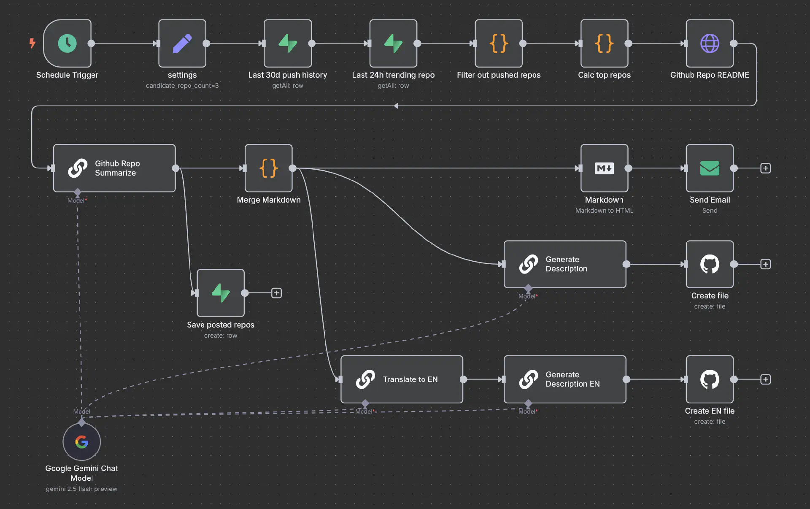
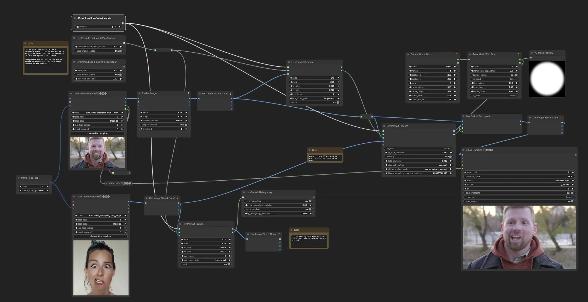
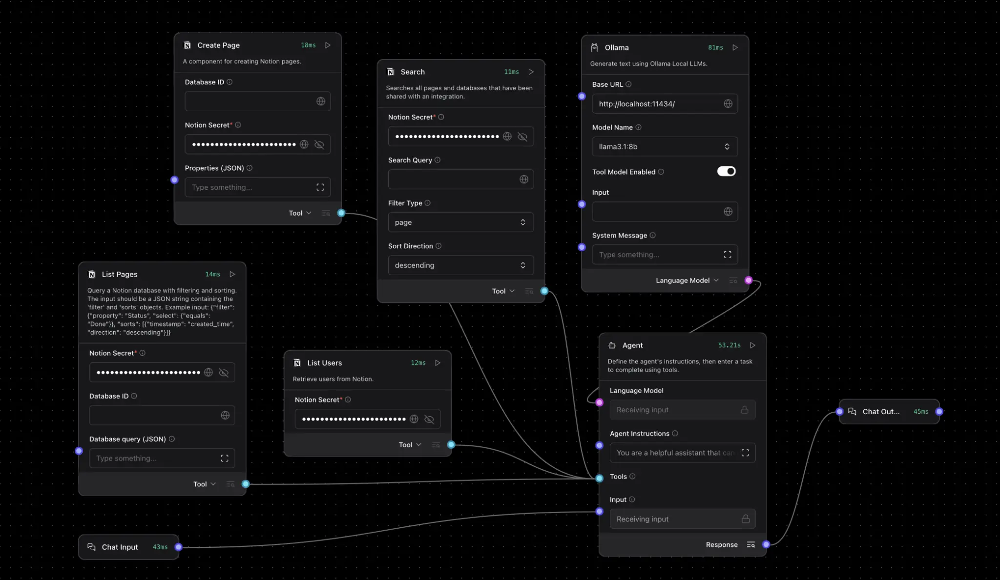

No Code / Low Code 平台與 AI 開發工具
考點摘要：結合傳統 Low Code 概念與新一代 AI Native 開發工具，強調非技術人員的賦能與開發效率。
平台特性與選擇 (理論基礎)
1. No Code vs. Low Code
這兩者都是為了加速開發，但目標客群與適用場景不同。
- No Code (無程式碼)：
- 核心：完全圖形化介面 (GUI)，拖拉元件 (Drag-and-Drop) 即可完成。
- 目標客群：非技術人員 (Citizen Developers)、行銷、PM。
- 適用場景：標準化應用、簡單的表單流程、個人網站、內部儀表板。
- 限制：靈活性低，只能做平台允許的功能，很難客製化複雜邏輯。
- Low Code (低程式碼)：
- 核心：大部分功能用拖拉，但關鍵邏輯允許（或需要）寫少量程式碼。
- 目標客群：專業開發者 (加速開發)、具有基本程式概念的 IT 人員。
- 適用場景：企業級應用 (ERP/CRM)、需串接多個舊系統、需高度客製化的邏輯。
- 優勢：兼具開發速度與擴展性 (Scalability)。
2. 模型 (Model) 的定義
在 Low Code 平台的語境中，「Model」通常不是指 AI 模型，而是指資料模型 (Data Model)。
- 它抽象地描述了資料結構（如客戶資料表包含姓名、電話）、業務流程（訂單審核流程）與介面邏輯。
- 這讓開發者可以專注於業務邏輯，而不用管底層的資料庫語法。
熱門 AI 開發與 No/Low Code 工具 (實務趨勢)
新一代的開發工具深度整合了生成式 AI，模糊了 Coding 與 No Code 的界線。
1. AI 原生編輯器 (AI-Native IDEs)
這些編輯器從底層就整合了 AI，而不僅僅是外掛。
- 運作原理：
- 傳統 IDE 只是把 AI 當外掛 (Plugin)，只能看到當前檔案。
- AI-Native IDE 會建立專案的 AST (抽象語法樹) 與 向量索引 (Vector Index)。
- 當你提問時，它不只看游標位置，還會檢索相關的函式定義、型別宣告，甚至專案文件。
- Cursor：
- 基於 VS Code 修改。
- Codebase RAG：它會索引你整個專案的程式碼。當你問「如何新增一個 API？」時，它會參考你現有的程式碼風格與架構來回答，而不是給出通用的範例。
- Composer：可以同時編輯多個檔案，一次完成跨檔案的修改。
- Windsurf：
- 強調 “Flow” 範式。Agent 能持續監控你的開發行為，預測你下一步想做什麼，並主動提供協助。
- Google Antigravity：
- 核心：Google 推出的 “Agent-first” IDE，基於 VS Code 修改。
- 特色：內建 Gemini 3 Pro 模型。採用雙視圖設計 (Editor & Manager)，允許使用者同時指揮多個 AI Agent 進行自主規劃、寫程式、執行終端機指令甚至瀏覽網頁。
- 優勢：強調「可驗證性 (Verifiability)」，Agent 會產出實作計畫、螢幕截圖等 Artifacts，適合處理高度複雜的系統級任務。
- 安全注意：由於 Agent 權限極大（可讀檔、上網），需注意間接提示注入風險。例如 PromptArmor 發現 惡意網頁可誘導 Agent 外洩
.env金鑰。使用時應保持 Human-in-the-loop 審查。
2. 雲端與 Agentic 平台
- Replit：
- 雲端 IDE。其 Replit Agent 允許使用者用自然語言描述需求（如「做一個貪食蛇遊戲」），Agent 會自動規劃、寫程式、除錯並部署，使用者完全不用看程式碼。
- Lovable / v0：
- 專注於 UI 生成。使用者上傳一張手繪草圖或截圖，AI 直接生成可用的前端程式碼 (React/Tailwind)。
3. 模型引擎與 CLI
- GitHub Copilot：
- 最普及的 AI 助手。提供即時的程式碼補全 (Autocomplete) 和單元測試建議。
- Claude Code：
- Anthropic 推出的 CLI 工具，具備強大的邏輯推理能力，能在終端機中直接操作檔案系統、執行指令並修改程式碼。
- OpenAI Codex：
- 核心：最初是 GitHub Copilot 背後的模型，現已演化為全方位的雲端軟體工程 Agent。
- 特色：可透過 CLI 或 IDE 擴充功能使用。具備在隔離沙箱 (Sandbox) 中導航程式碼庫、執行測試與修復 Bug 的能力。
- 模型：由
codex-1(基於 o3 微調) 等專用模型驅動，擅長精確的程式碼生成與除錯。
4. 工作流自動化與視覺化編排 (Workflow Automation & Visual Orchestration)
這類工具專注於將 AI 模型與其他應用程式串接，或是提供視覺化的介面來設計複雜的 AI 處理流程。
- n8n：
- 定位：強大的工作流自動化工具 (Workflow Automation Tool)，強調可自託管與高度客製化。
- AI 整合：內建 AI Agent 節點，可以輕鬆將 LLM (如 GPT-4, Claude) 與超過 400 種外部服務 (如 Google Sheets, Slack, Email) 串接。
- 應用場景：自動化辦公流程，例如「收到客戶 Email → 用 AI 分析情緒與摘要 → 寫入 Notion 資料庫 → 自動草擬回信」。

- ComfyUI：
- 定位：專為 Stable Diffusion 設計的節點式圖形介面 (Node-based GUI)。
- 核心：將圖像生成的各個步驟 (如 Checkpoint 載入、CLIP 編碼、採樣器 Sampler、VAE 解碼) 拆解成獨立的節點，讓使用者能精細控制生成流程。
- 應用場景：進階圖像生成、影片製作、建立複雜的圖像處理工作流 (Workflow)。

- LangFlow / Flowise：
- 定位：專為構建 LLM 應用設計的視覺化平台，通常基於 LangChain 框架。
- 核心：提供拖拉介面來組裝 RAG (檢索增強生成) 系統、聊天機器人 (Chatbot) 或 Agent。
- 應用場景：快速原型開發 (Prototyping)，無需寫程式即可測試不同的 Prompt 策略或知識庫檢索效果。

5. 生成式 AI 產業應用案例 (Industry Applications)
生成式 AI 與 No Code / Low Code 工具的結合，正推動各行各業的數位轉型。以下是主要領域的應用場景：
(1) 醫療與生物科技 (Healthcare & Biotech)
- 藥物開發：分析大量生物醫學數據，預測分子結構，縮短新藥研發週期。
- 精準醫療：依據患者基因組數據與病歷，生成個人化治療計畫。
- 醫學影像：生成合成影像數據以優化模型訓練，或輔助醫生進行影像診斷。
- 病歷摘要：自動整理醫生口述或雜亂的病歷資料，生成結構化報告。
(2) 製造與產品設計 (Manufacturing & Design)
- 生成式設計 (Generative Design)：輸入功能需求與材料限制，AI 自動生成數百種最佳化的產品結構設計（如輕量化零件）。
- 預測性維護：分析設備感測器數據，生成維護建議報告，預防無預警停機。
- 供應鏈優化：預測市場需求波動，自動調整生產計畫與庫存策略。
(3) 金融服務 (Finance)
- 風險評估：模擬各種市場情境 (Scenario Analysis)，生成壓力測試報告。
- 投資顧問：結合即時財經新聞與個股數據，為客戶生成個人化的投資組合建議。
- 合規監控：自動監控交易紀錄，生成可疑活動報告 (SAR) 以防範洗錢。
(4) 零售與行銷 (Retail & Marketing)
- 個人化行銷：分析消費者行為，自動生成專屬的 EDM、廣告文案與產品推薦。
- 虛擬試穿/試妝：利用圖像生成技術，讓消費者在線上預覽穿戴效果。
- 庫存管理：預測特定商品的銷售趨勢，優化補貨策略。
(5) 教育與培訓 (Education)
- 教材生成：根據課程大綱，自動生成講義、測驗題與教學投影片。
- 個人化家教：針對學生的弱點，生成客製化的練習題與解釋。
- 語言學習：模擬真實對話情境，提供即時的口說與寫作回饋。
(6) 娛樂與媒體 (Entertainment)
- 內容創作：輔助劇本撰寫、分鏡腳本 (Storyboard) 生成、背景音樂創作。
- 遊戲開發：自動生成無限變化的遊戲地圖 (Procedural Generation)、NPC 對話與任務支線。
- 虛擬角色：驅動虛擬偶像 (VTuber) 進行即時互動與直播。
6. 工具比較總結 (Summary Table)
| 工具名稱 (Tool) | 類別 (Category) | 核心特色 (Key Features) | 適用場景 (Use Case) |
|---|---|---|---|
| Cursor | AI-Native IDE | Codebase RAG, Composer (跨檔案編輯) | 專業開發者日常 Coding |
| Windsurf | AI-Native IDE | Flow 範式, 主動預測開發行為 | 追求流暢開發體驗的工程師 |
| Google Antigravity | AI-Native IDE | Agent-first, 雙視圖, 可驗證 Artifacts | 複雜系統開發, 需高度自主 Agent |
| Replit | Cloud / Agentic | 雲端 IDE, 自然語言生成 App (Replit Agent) | 快速構建 MVP, 非專業開發者 |
| Lovable / v0 | UI Generation | 圖像/草圖轉前端程式碼 (React/Tailwind) | 前端介面設計, 快速 UI 原型 |
| GitHub Copilot | CLI / Extension | 程式碼補全, 單元測試建議 | 輔助 Coding, 提升寫碼速度 |
| Claude Code | CLI | 終端機操作, 邏輯推理, 檔案系統控制 | 腳本自動化, 複雜重構任務 |
| OpenAI Codex | Model / Agent | 雲端軟體工程 Agent, 沙箱執行 | 程式碼生成, Bug 修復, 測試 |
| n8n | Workflow Automation | 串接 LLM 與 400+ 外部服務, 辦公自動化 | 企業流程自動化, 資料串接 |
| ComfyUI | Visual Orchestration | 節點式 Stable Diffusion 工作流 | 進階 AI 圖像/影片生成 |
| LangFlow / Flowise | Visual Orchestration | 視覺化 LLM/RAG 應用構建 (LangChain) | 快速打造 Chatbot, RAG 原型 |
整合策略與風險
1. 影子 IT (Shadow IT)
- 定義：員工在未經 IT 部門核准的情況下，擅自使用外部的 No Code/AI 工具來處理公務。
- 風險：
- 資安漏洞：資料可能被上傳到不安全的雲端（如將客戶個資貼到免費版 ChatGPT）。
- 缺乏維護：員工離職後，他用 No Code 做的系統沒人會維護，變成孤兒系統。
- 資料孤島：數據散落在各個小應用中，無法整合。
- 類比：就像辦公室裡的員工覺得插座不夠，自己亂拉延長線 (DIY Wiring)。雖然暫時解決了問題，但可能導致跳電甚至火災 (資安風險)，且水電工 (IT 部門) 根本不知道這些線路的存在。
- 實例：
- 行銷部門為了方便，自己用 Airtable 建立客戶名單，結果該服務被駭客入侵，導致公司資料外洩。
- 業務為了省事，用個人的 Gmail 帳號註冊了某個 AI 摘要工具，並上傳了機密的會議記錄。
2. 開發輔助策略 (AI-Assisted Development)
如何安全有效地利用 AI 輔助開發？
- Boilerplate Code (樣板程式碼)：
- 利用 AI 生成重複性高的程式碼，如 API 串接、資料庫連線設定、單元測試框架。
- 例子：「幫我寫一個 Python Flask 的 Hello World 範例，並包含 Swagger 文件設定。」
- 測試數據生成 (Mock Data)：
- 利用 AI 生成逼真的測試資料，避免使用真實客戶個資。
- 例子：「生成 100 筆包含姓名、Email、台灣手機號碼的 JSON 測試資料。」
- Code Review 與重構：
- 讓 AI 擔任 Reviewer，檢查程式碼的潛在 Bug 或優化空間。
- 例子：「請檢查這段程式碼是否有 SQL Injection 的風險，並建議如何優化效能。」
- 關鍵原則：
- Human-in-the-loop：AI 只是副駕駛 (Copilot)，人類機長 (Pilot) 必須對最終結果負責。
- Zero Trust：預設 AI 生成的程式碼是不可信的，必須經過測試與審查。